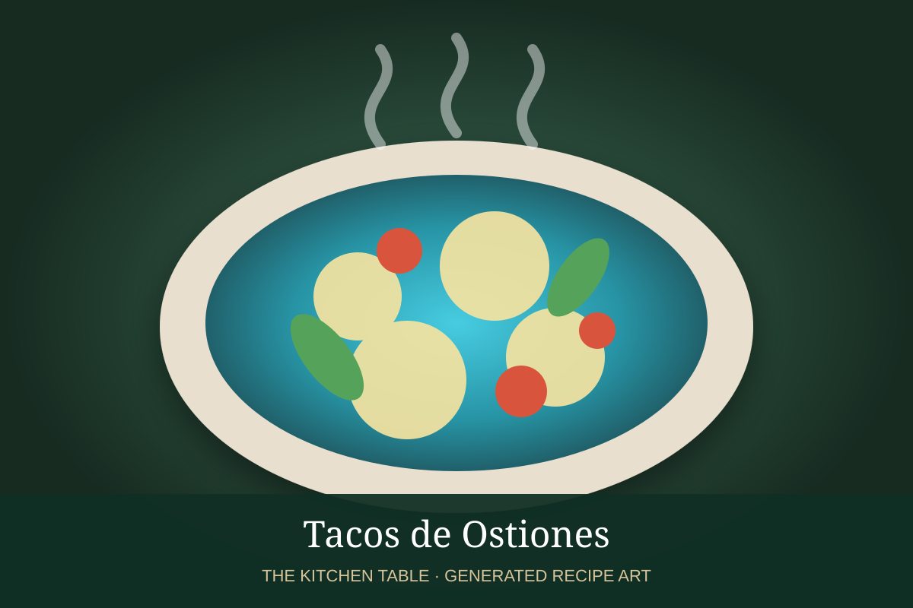

← Back to all recipes
SEAFOOD · MEXICAN
Tacos de Ostiones
Quick-seared oysters with garlic, chile, lime, cabbage, and avocado in warm tortillas.
25 minMakes 8 tacos

Photo: Serious Eats
Ingredients
- 24 shucked oysters
- Butter
- Garlic
- Serrano
- Lime
- 8 tortillas
- Cabbage
- Avocado
- Cilantro
- Salt
Preparation
- Pat oysters dry.
- Sauté garlic and serrano in butter.
- Add oysters and sear briefly until edges curl.
- Finish with lime and salt.
- Serve with cabbage, avocado, and cilantro.